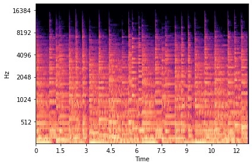
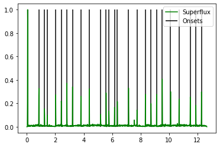
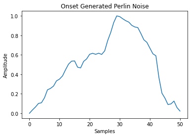

Impulse is a rhythm game where the player must click on the circles that appear on the screen to the beat of the song. Players can play procedurally generated beatmaps using their own audio files.
The beatmaps are automatically generated using superflux onset detection, and Perlin Noise for x and y coordinates.
For onset detection, a log mel-spectrogram is taken from the user's selected audio file. A window length of 1024 samples with a stride of 441 samples is used at a sampling frequency of 44100 kHz.
Next the superflux function is applied to generate peaks for the peak picking onset detection function.
Lastly, two Perlin Noise sequences are constructed for the x and y coordinates for each onset.
Each beatmap is stored in its own folder under beatmaps/ using the name of the input file. A json file is created containing the name of the song, list of onsets and corresponding x and y locations.
Impulse runs on PyGame due to its compatibility with other libraries that I am familiar with, namely, NumPy (Perlin noise generation, onset detection), librosa (onset detection, DSP functions), and PyDub (Audio File I/O).
Playing rhythm games are fun, but they are more fun when you can play music that you like without having to spend the time making a beatmap for every song you own. Rhythym games are challenge to make and to play, I hope to do more in the future.